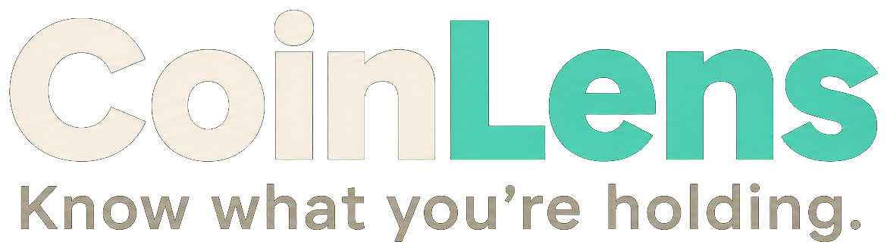
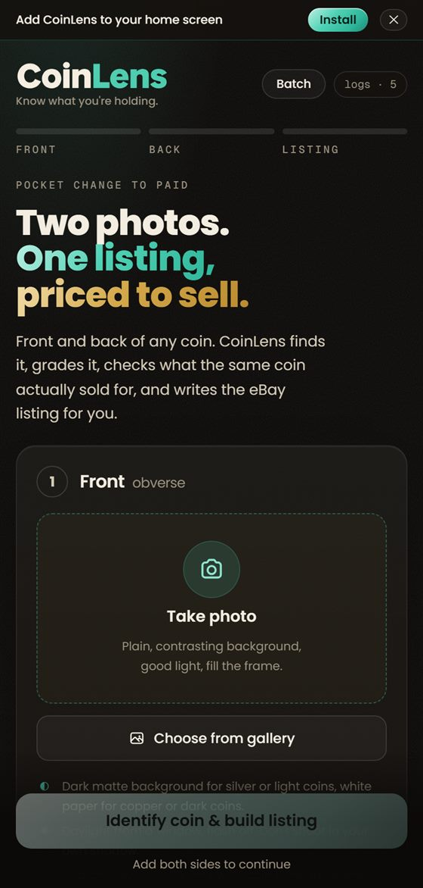
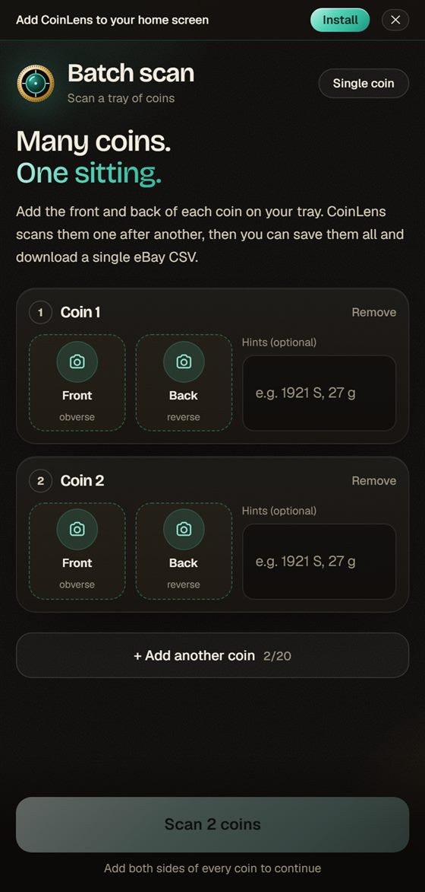
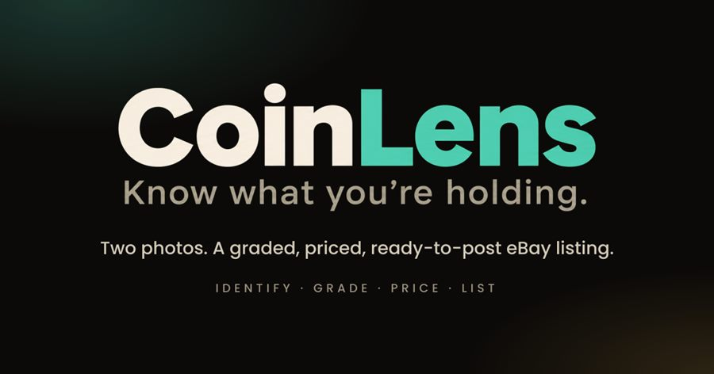
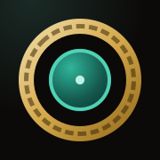

How the CoinLens brand looks, sounds and behaves. The core identity, the rules that keep it coherent, five alternative directions for different moods and channels, and a ready-to-paste prompt for generating logo explorations.
Pages 3 to 11 are the rules. Everything CoinLens ships should pass them. Pages 12 to 17 are options: pick a direction per channel, never per screen.
The name, the tagline, the mark, the drawn wordmark, one typeface (Poppins), and the one colour rule: green is for looking, brass is for money.
Background (dark, light, paper), type pairing, texture, energy level. The directions show how far it stretches without breaking.
CoinLens turns two phone photos into a graded, priced, ready-to-post eBay listing. It is for people selling coins, not people studying them: estate clear-outs, flea-market pickers, hobbyists with a shoebox from Grandpa.
The brand borrows from two objects that belong on a coin dealer’s bench: the coin itself (antique brass, reeded edges, engraved numerals) and the jeweller’s loupe (a dark lens, a reticle, the act of looking closely). Everything in the identity is one of those two things.
Numbers are tabular, labels are engraved, nothing wobbles. The app looks like it measures things.
Near-black is warm, not blue. Paper is cream, not white. It feels like a shop, not a lab.
We say “sold for”, not “market valuation”. Short sentences. No numismatic gatekeeping.
| We are | The fastest honest route from a coin in your hand to a listing that sells. |
|---|---|
| We are not | A collector’s database, a price-guide subscription, or a grading service. |
| Proof | Real sold comps, melt value, confidence shown, a listing you can post in one tap. |
| Tagline | Know what you’re holding. Always sentence case, always with the period. |
Six parts, each with a job. Reproduce them in this order and at these proportions on a 64-unit grid. Nothing may be added inside the coin.
| # | Part | Spec (64-unit grid) | Meaning |
|---|---|---|---|
| 1 | Coin body | Circle r=30, brass gradient #f3e1b0 → #d4a84b → #8f6619 at 135°, soft white highlight top-left | The thing being sold |
| 2 | Reeded edge | Circle r=28, dashed stroke 2.6, dash 1.3 / gap 2.1, #3a2805 at 55% | Real coins have a milled rim |
| 3 | Field | Circle r=23, #0c0a08 (ink-900) | Obsidian; the dark stage |
| 4 | Lens | Circle r=15.5, radial #2fb59a → #145a4e → #0b2b26 off-centre, 1.8 stroke #4fd1b5, glint arc top-left | The loupe; looking closely |
| 5 | Reticle ticks | Four 4.5-unit strokes at N/E/S/W on the field, 1.6 wide, #f3ede1 at 90% | Measurement, precision |
| 6 | Centre dot | Circle r=2.2, #bff0e4 | Focus found |
Clear space on all sides equals one quarter of the coin’s diameter. Nothing enters it: no type, no edges, no other marks.
Minimum: 24 px on screen, 8 mm in print. Below 32 px drop the glint arc and reeding; below 20 px use the one-colour version.
| Spelling | CoinLens. One word, capital C and L. Never “Coin Lens”, “Coinlens” or “COINLENS”. |
|---|---|
| Asset | The wordmark is a drawn asset: public/brand/coinlens-wordmark.png (name) and coinlens-lockup.png (name + tagline), transparent PNGs. Use them wherever possible. |
| Type | Poppins ExtraBold (800), tracking −0.03em, line-height 1: the face the asset was drawn in. Typeset it live only where the PNG cannot go (plain text, very large sizes). |
| Colour | “Coin” in cream-100, “Lens” in the patina gradient (#bff0e4 → #4fd1b5 → #2fb59a). On light surfaces “Lens” is solid patina-600. Never brass: the word is about looking. |
| Mark size | Mark height = 1.6 × cap height of the wordmark. Gap between mark and word = ⅓ mark width. |
| Tagline | Poppins Medium, sentence case, cream-500, roughly ¼ the wordmark size. Sits under the word, left-aligned with “C”. Drop it below 28 pt. |
| In running text | Set “CoinLens” in the body face, no special colour. The wordmark is for headers, covers and marketing. |
| Sub-brands | Append in Poppins Medium after a thin space: CoinLens Batch. Never create a second mark. |
Warm near-black surfaces. Never a blue-black.
Paper-coloured type. Never pure white.
Verdigris green. Everything about looking and doing.
Antique gold. Money, value and warnings only.
This is the single most important rule in the identity. It means a user can tell, without reading, whether a thing on screen is an action or a dollar amount.
| Pair | Ratio | Use | Pair | Ratio | Use |
|---|---|---|---|---|---|
| cream-100 on ink-900 | 17.5 : 1 | Body text | patina-400 on ink-900 | 10.4 : 1 | Links, labels |
| cream-500 on ink-900 | 6.5 : 1 | Eyebrows (small, so keep ≥ 10.5 px) | gold-400 on ink-900 | 8.9 : 1 | Prices |
| #04211b on patina-400 | 9.7 : 1 | Primary button text | patina-600 on cream-100 | 4.6 : 1 | “Lens” on light surfaces (AA) |
Headlines, the wordmark, big numbers. ExtraBold 800 at −0.03em, line-height 1 to 1.05. It is the same family the wordmark was drawn in, so the logo and every headline agree. Use real weights only; never faux-bold or faux-italic.
Google Fonts, OFL. Fallback: system-ui.
Everything readable: paragraphs, buttons, form fields, table cells. Regular 400 for text, Medium 500 for buttons, names and the tagline, SemiBold 600 for small headings. Line-height 1.45 to 1.5. Poppins runs wide, so keep body at 15 px on mobile.
Same family as display. Fallback: system-ui.
The one deliberate exception. Eyebrow labels (10.5 px, 500, tracking 0.2em, uppercase, cream-500), weights, dates, SKUs, cert numbers, and any column of figures. Always tabular numerals. It reads as engraving, not as a second voice.
Google Fonts / Vercel, OFL. Fallback: ui-monospace.
| Role | Face / weight | Size (mobile) | Tracking |
|---|---|---|---|
| Hero headline | Poppins 800 | 34–36 px | −0.03em |
| Section title | Poppins 700 / 800 | 22–26 px | −0.025em |
| Card heading | Poppins 600 | 15–16 px | −0.01em |
| Body | Poppins 400 | 15 px / 1.5 | 0 |
| Eyebrow | Geist Mono 500, caps | 10.5 px | 0.2em |
| Big price | Poppins 800, brass, tabular | 28–34 px | −0.03em |
Knows the coin, tells you straight, doesn’t waste your afternoon. Confident about facts, honest about uncertainty, never condescending about what you don’t know.
Short sentences. Everyday words. “Sold for”, not “realised”. “Worn”, before “VG-8”.
Numbers over adjectives. “Three sold this month for $160–$210” beats “strong demand”.
Show confidence levels. Say when a close-up is needed. Never pretend a blurry photo is fine.
No exclamation marks, no emoji in product copy, no “oops”. Warmth comes from being useful.
| Moment | Say | Not |
|---|---|---|
| Hero | Two photos. One listing, priced to sell. | AI-powered numismatic valuation platform |
| Empty state | Snap the front and the back. Any angle, any light; we’ll find the coin. | No images uploaded yet! |
| Working | Reading the coin… checking what it sold for… | Processing your request |
| Result | 1921-S Morgan dollar, about Very Fine. Three sold this month for $160–$210. | Identification complete. Estimated value: $185. |
| Uncertain | We’re fairly sure, not certain. A close-up of the mint mark would settle it. | Low confidence result |
| Limit hit | That’s 25 scans today. Sign in for more, or come back tomorrow. | Error 429: quota exceeded |
| Price caveat | Silver melt is $24 today, so don’t list below that. | Intrinsic metal value threshold |
| Hint field | e.g. from Grandpa’s collection, weighs 26.7 g, came in a 2x2 marked “1921 S Morgan” | Enter additional metadata |
Sentence case everywhere, including buttons and titles. Oxford comma. Curly quotes and apostrophes. Dollar amounts as $184, ranges as $160–$210 with an en dash. Grades in plain words first, Sheldon scale in parentheses when useful. American English and American references: the audience sells on eBay US.
Every dark surface has the two radial glows and a film-grain layer (SVG feTurbulence, 7% opacity). Cards use 1 px borders at 8% white and an inner highlight at 6%. No drop shadows on cards except the primary-button glow.
Motion is slow and mechanical, like a loupe being adjusted. Nothing bounces. Respect prefers-reduced-motion.
Coins are the hero. Show them large, centred, on ink or on a real surface (felt, wood, a 2x2 flip). Raking light to catch the relief. No stock photos of hands holding phones, no piles of generic gold, no green-screen renders.
User photos in the app get the “coin-ring”: a 2 px patina bezel with a soft outer glow, so even a kitchen-table snapshot looks examined.
Same name, same mark, same colour rule. What changes is the surface, the type pairing and the energy. Pick one per channel and stick to it; the app itself stays in Direction A.
The core. The app, the website, the store. Dark, warm, precise.
The light twin. Print, PDFs, eBay store header, daylight marketing.
Stripped to black, white and one brass hit. Merch, stickers, developer docs.
Oxblood, brass, engraved rules. For collectors, shows, the newsletter.
Patina turned up. Short video, TikTok, app-store screenshots, launch posts.
| Channel | Direction | Channel | Direction | Channel | Direction |
|---|---|---|---|---|---|
| App, website, email | A | Printed one-pager, invoices, this guide | B | Sticker, tee, GitHub README | C |
| eBay store banner | B | Coin-show flyer, collector newsletter | D | TikTok, Reels, Shorts, launch tweet | E |
| App-store listing | A (screens) + E (captions) | Partner deck | A or B | Pitch to a dealer | D |
The identity as shipped. A dark, warm bench with a green lens and a brass coin. Everything in pages 3 to 11 describes this direction in full.
| Mood | A dealer’s back room at night. Felt, brass, a desk lamp. |
|---|---|
| Surface | ink-900 with glows and grain; cards ink-800 |
| Type | Poppins 800 / 500 / 400, Geist Mono for ledgers |
| Accent | patina-400 for action, gold-400 for money |
| Texture | Grain 7%, hairlines, reticle |
| Use for | The product. Website, app, emails, partner decks. |



Social card: mark left, wordmark right, tagline, mono eyebrow.

App icon: field bleeds to the edge.
The same brand in daylight. Cream paper, ink type, verdigris pulled down to patina-600 so it still reads on light. Brass darkens to gold-600 for the same reason. Think of a mint sheet or an auction catalogue page.
| Mood | A catalogue on a kitchen table. Clean, unhurried. |
|---|---|
| Surface | cream-100 #f3ede1; cards white at 55%; rules cream-300 |
| Type | Unchanged: Poppins + Geist Mono |
| Accent | patina-600 #1f8a76 for action, gold-600 #8f6619 for money |
| Texture | No glow. Very light paper grain allowed in print. |
| Use for | Printed material, PDFs, eBay store banner, invoices, daytime ads |
A printable listing sheet in Direction B. Same hierarchy as the app, inverted.
Everything stripped back to a proof coin’s contrast: true black, true white, and a single brass hit for the one thing that costs money. No green at all, which is why this direction is for objects, not interfaces.
| Mood | A proof strike under glass. Hard edges, one glint. |
|---|---|
| Surface | #000 or #fff, nothing between |
| Type | Geist Mono for everything; Poppins only for the wordmark |
| Accent | gold-400 #d4a84b, once per surface |
| Mark | One-colour version, white or brass |
| Use for | Stickers, tees, 2x2 flip inserts, GitHub README, API docs, laser engraving |
The brand in its Sunday clothes. Oxblood leather, brass hardware, engraved rules and ornament dots. Same Poppins, same mark; verdigris stays only as the lens and small accents, like the patina on an old shop sign.
| Mood | A downtown coin shop since 1962. Glass cases, velvet trays. |
|---|---|
| Surface | Oxblood #2a1014; deep #1a0a0c; rules #4a1d22 |
| Type | Unchanged: Poppins 800 / 500, Geist Mono for ledgers. The dress changes, the voice does not. |
| Accent | gold-300 #e8c874 leads; patina-500 for the lens and one detail |
| Texture | Grain, engraved line rules, ornament dots “·” |
| Use for | Coin-show flyers, collector newsletter, dealer pitch, anniversary posts |
A flyer header in Direction D. Same type as the app; only the dress changes.
Patina turned all the way up for places where you have one second to win attention. Deep teal replaces obsidian, headlines get huge, numbers get enormous, and the brass becomes a pale highlight rather than a gradient.
| Mood | A lens catching the light. Fast, bright, confident. |
|---|---|
| Surface | Deep teal #04211b with a strong patina glow |
| Type | Poppins 800 at display sizes, tight leading; Geist Mono captions |
| Accent | patina-200 #bff0e4 for text, gold-200 #f3e1b0 for the price |
| Texture | Grain, scan-line reticle sweeps, the mark spinning |
| Use for | TikTok / Reels / Shorts, app-store caption frames, launch posts, OOH if ever |
Vertical video end-card and two caption frames. Huge type, one number, mark small in the corner.
Ink field to the edge, mark centred at 76% of the tile. Already shipped as apple-icon and icon.svg.
Mark left on a soft glow, wordmark and tagline right, mono eyebrow. Direction A only.
Direction B. Light so it sits well inside eBay’s white chrome.
Direction C for the insert (one-colour press), a die-cut circle sticker of the full mark.
Enhanced photos ship on ink with the coin-ring. The buyer sees a coin that has been looked at.
The reticle turns, the mark spins. Copy says what is happening in plain words.
Use: reeded edge, milled rim, loupe, verdigris, antique brass, reticle, flat vector, warm near-black, instrument-like, precise.
Avoid: magnifying glass (brings a handle), gold coin (brings yellow and a dollar sign), futuristic, neon, glossy, 3D, mascot, crypto.
| Name | CoinLens (one word, C and L capitals) |
|---|---|
| Tagline | Know what you’re holding. |
| Eyebrow | IDENTIFY · GRADE · PRICE · LIST |
| Rule | Patina = looking & doing. Brass = money & caution. |
| Mark | Brass reeded coin, ink field, verdigris lens, four ticks, centre dot. 64-unit grid, page 4. |
| Never | Blue, pure white, a second typeface, italics, red errors, type inside the mark |
| ink-900 | #0c0a08 | cream-100 | #f3ede1 |
| ink-800 | #15120e | cream-300 | #d3cab8 |
| ink-600 | #2e2820 | cream-500 | #9a917f |
| patina-200 | #bff0e4 | gold-200 | #f3e1b0 |
| patina-400 | #4fd1b5 | gold-400 | #d4a84b |
| patina-500 | #2fb59a | gold-500 | #b9892e |
| patina-600 | #1f8a76 | gold-600 | #8f6619 |
| patina-700 | #145a4e | gold-700 | #5e400a |
Button text on patina: #04211b. On brass: #1d1303. Direction D oxblood: #2a1014. Direction E teal: #04211b.
| Display | Poppins 800, −0.03em |
|---|---|
| Body | Poppins 400 / 500 / 600 |
| Ledger | Geist Mono 500, eyebrows 0.2em caps |
| Wordmark asset | public/brand/coinlens-wordmark.png public/brand/coinlens-lockup.png |
| Mark source | src/components/Logo.tsx src/app/icon.svg · public/icon.svg |
| Wordmark | src/components/Wordmark.tsx |
| Tokens | src/app/globals.css (@theme) |
| Share card | src/app/opengraph-image.tsx |